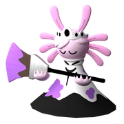

Radiant Reef
They arrived at the reef just to see that nothing was wrong. Weird… Anyways! They found this cute baby axolotl! However, as they neared her, she painted an extremely cute drawing!
The heroes thought it was cute and neared the drawing. But the smart ones, Scientist and Wizard, knew there was something wrong. And surprise the little drawing spit out ink everywhere.
“AGH IT STINGS!” yelled Spectre. “D:>” The Dumpster children followed. “Guys there is water over there.” One Wizard told in disappointment. “Let’s go and rub it off guys!” replied a Beebo.
“Roger that!” Slime King followed. With that, most of the heroes ran to wash off the ink. One Keith somehow came speedy. It looked as if he was yelling. It looked like he said something
like “WATCH TOWN” eh it really didn’t make sense. But as he got closer, The Scientist’s and Wizard’s heard him say “WATCH OUT!” And he sure was right because a ginormous crab the size of
Wizard was so close to pinching him. The drawing the axolotl made suddenly aimed and BINGO! Hit the crab right in the face. The crab walked into water. But in a couple seconds he was
nowhere to be seen. “Hmmmm. Weird isn’t it Scientist’s?” A Wizard asked. “It sure is. But now let’s go calm that axolotl.” A Scientist replied. “Hey guys!” one of the Voca’s yelled
“We are back!” “Hey Voca!” A Scientist said “Yea?” Two of the Voca’s replied. “Do you want to come with me and calm down the axolotl artist?” “You mean the axolotl that made the cute
little drawing that sprayed us in ink?” “Yeah, that axolotl.” “Ok I’ll come and help. But she must not spray us in ink or else… You know what will happen.” “*gulp* Yup.” With Voca now
willing to help scientist the two of them set out to find the axolotl. After a couple minutes they saw the sad but cute axolotl. One of the five Voca’s cutely asked it “Hey what’s your
name?” “My name is Stella but just go away!” the axolotl said. “My name is Voca, I just want to help!” “Really? How?” “I can max you with this! * Shows mana*. When your maxed you can make
other drawings!” “Really?” Stella said in disbelief. “Yup!” A Voca replied. “Alright max me! And why are there so many of you?” “Because of a friend you’ll meet.” Stella was maxed and she
looks so beautiful! The two groups (The Scientist’s and Voca’s) and Stella (the axolotl with no limit yet) set out to find the rest of the groups of heroes. After a couple minutes they saw
Spectre and the group. “Hello guys!” Spectre said. “Hello there um ghost.” “My name is Spectre! Nice to meet you!” “My name is Stella! Nice to meet you too!” “Your limit is 4 by the way!”
“Alright!” “So, is there anything wrong?” “Yes, but for you to see what’s wrong you must follow me.” “Ok we will follow you!” said Dumpster Child. Stella showed them to the same place
where the crab disappeared. “You see this water hole?” Stella questioned. “Yes, we do. Why?” asked Fracture. “Well, who can swim?” Stella replied. “ME!” Everyone yelled. “I don’t think I
can.” Said Dumpster Child. “Well, someone has to be with him.” Stella said. “I’ll be with him because my electricity might ruin the water.” “Alright. Well follow me guys” “WAIT!” yelled
scientist “Take my submarine.” “Ok then, sure I guess” replied one Stella. So, everyone but dumpster child and scientist went through the hole. When they went through the hole they saw
the reef. “Wow its beautiful!” said one of the Chef. “It sure is. But when you get below the water there is something wrong. Take these bubbles so you can breathe.” Stella replied.
“But how are we going to attack?” asked Fracture. “Well, you can attack through these bubbles. They are for that.” A Stella answered. “Ok then. Where is the problem?” Wizard said.
“Right there. Her name is Payara. The god of the sea.” “THE GOD OF THE SEA? OHHHHH WE ARE SO SCREWED!” replied Spectre. “Well not the god I mean it kind of makes sense she is
a queen because all animals of the sea worship her.” Stella said. “Oh, could’ve just told me that.” Spectre replied.
“So, the thing is she looks nice. But the problem is that she is evil. And with her army can take over the entire ocean.” “Then we must stop her.” Beebo replied.
"Oh, that’s not easy at all. She is protected by the clam king and clam knights. Really tough.” Stella said. “Then let’s go get them first!” Keith said.
“All right here we go!” Stella replied. With that the heroes went in search for the Clam knights and Clam King. They found them a couple minutes later. “All right.
LET’S FIGHT!” yelled Spectre. There were four Clam knights guarding the Clam king. So, the heroes rushed in trying to take down the knights first. (This drawing is what each group can do).
“OW!” Yelled one of the Clam knights. “THIS IS WHERE WE FALL!” Another Clam knight said. “Take care Clam king!” The last one said. With that done all there was left was the Clam King.
Let’s just say he did not have a fun time. Payara was enraged when she heard that the Clam King (her allay) had fallen. So, she went with her army to destroy Team heroes.
“HA IN YOUR LITTLE BRAIN! OH, WAIT YOU DON’T HAVE ONE. HAHAHAHAHAHAHA! Yelled Lemonade Cat In victory. “I think we have more problems…” said Stella in somewhat in a surprising voice.
And there she was… The queen of the reef… Payara… WITH TEN CLAM KNIGHTS. Oh my… Let’s see what heroes think. “Holy cow we are dead.” Spectre said. “I don’t know. Are we?” Voca said.
“YES, WE ARE.” everyone said except slime king. “I don’t want to die young :(.” Voca replied. “Don’t worry everyone. Just RUN! I’ll stay back.” Yelled Slime King. “Guys you heard him.
Run.” Wizard said, “What about Slime King?” Voca asked. “He can do this… Hopefully.” Stella said. “JUST RUN FOR GODS SAKE.” Slime King screamed. “Ok then… See you Slime King…”
Spectre and Wizard said. With everyone gone all that there was left was Slime king and the ten Clam knights. “Bahahaha. You just got abandoned by your whole team.” Payara said.
“Now that you are alone It would be an enjoyable time to hear your last words. What are your last words?” “My last words are… IM NOT DONE YET!” Slime king said. Suddenly slime king just
“Um Team Heroes?” Payara said. “Yeah?” Everyone said. “Can you spare me??? Please” “Uh no. You tried to kill me. Anyway, any last words?” Slime King said “NOOOOOOOOOOOOOOOOO!” Payara
replied. The final blow was done and Payara dropped a skin that was someone they never saw. “UH GUYS SOMETHING IS HAPPENING TO SPECTRE AND LEMONADE CAT!!! THERE GLITCHING” Voca screamed.
“He-e-e-l-p.” Lemonade Cat softly said. Suddenly a giant white explosion happened. “MY EYES!” Wizard screamed because of the blinding light. Suddenly everything went black for Spectre and
Lemonade Cat. “Guys lets go help Spectre and Lemonade Cat.” Stella said. Team Heroes tried waking them up and finding the rest of the lemonade cats. Team Heroes realized that Spectre and
the 4 Lemonade Cats they found (Instead of 5) were level 1! “Where am I?” Spectre and The Lemonade Cats said. “You’re with Team Heroes!” The Voca’s spoke. “Can you guys help us get to
our max forms?” “Sure!” The heroes (Spectre and the 4 Lemonade Cats) were maxed, but something was off. There was one Lemonade Cat missing. “Where is the other Lemonade Cat?” One of the
Lemonade cats said. “I don’t know.” Another Cat replied. “The price I give more is now 10% WOOHOO!!!” Spectre screamed happily. “What the… I HAVE TAXES AND I EARN LESS MANA ASWELL AS
ME BEING MORE EXPENSIVE. BRUHHHHHHHHHHHHHHHHHH.” A Lemonade Cat said. “That’s what I call Karma for nearly making us DIE in Desolate Desert” A Wizard replied. “Wait… you nearly died?!”
Most of the Heroes said. “Yeah because of this group of Lemonade Cats which used to be one was so greedy.” Another Wizard replied. “Oh My God. LEMONADE CAT!!!” Most of the heroes
screamed. “Bruh that’s in the past. Anyways, you should be thankful for me helping you get max.” A Lemonade Cat said. “True, he is right.” Spectre said. “Hey guys.” A Chef said.
“Yeah?” All the heroes said “Let’s go to the next map. What do you say?” “Let’s go another Hero!” Spectre said “YEAH!!!” The Heroes said. The heroes decided to find what had made
Lemonade Cat and Spectre change. “Guys I think it has to do with the concert in the Corporate City. The place where we recruited Lemonade Cat!” A Wizard said.
“You could be right. A concert has been going on so let’s go check it out.” A Scientist said.
2 HOURS LATER WHEN THE HEROES ARRIVED AT THE CONCERT………
“This is weird… Cat themed… Sus.” Beebo said. “Bruh… Another among us relation.” Wizard replied. “Anyway, here we are. Idol Encore.”
Back Next Page
Show Name on Mouseover

Developed By : Rishik Peddi!